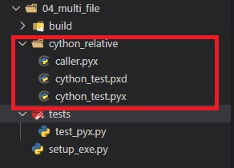

5.Cython模块导入
1、概述
Python 提供了 modules 和 packages 来组织项目，这允许函数、类、变量等，按照各自的功能或者实现的业务，分组到各自的逻辑单元中，从而使项目更容易理解和定位。并且模块和包也使得代码重用变得容易，在 Python 中我们使用 import 语句访问其它 module 和 package 中的函数。
而 Cython 也支持将项目分成多个模块，首先它完全支持 import 语句，并且含义与 Python 中的含义完全相同。这就允许我们在运行时访问外部纯 Python 模块中定义的 Python 对象，或者其它扩展模块中定义的可以被访问的 Python 对象。
只有 import 的话，Cython 是不允许两个模块访问彼此的 cdef、cpdef 定义的函数、ctypedef、struct 等等，也不允许访问对其它的扩展类型进行 C 一级的访问。比如：cython_test1.pyx 和 cython_test2.pyx ，这两个文件之间无法通过 import 互相访问，当然 cimport 也无法实现这一点。
而为了解决这一问题，Cython 提供了相应类型的文件来组织 Cython 文件以及 C 文件。到目前为止，一直使用扩展名为 .pyx 的 Cython 源文件，它是包含代码的逻辑的实现文件，但是除了它还有扩展名为 .pxd 的文件。
pxd 文件你可以想象成类似于 C 中的头文件，用于存放一些声明之类的，而 Cython 的 cimport 就是从 pxd 文件中进行属性导入。
这一节来介绍 cimport 语句的详细信息，以及 .pyx、.pxd 文件之间的相互联系，如何使用它们来构建更大的 Cython 项目。有了 cimport 和这两种类型的文件，就可以有效地组织 Cython 项目，而不会影响性能。
2、Cython的实现文件和声明文件
如果的 Cython 项目非常小，并且没有其它代码需要访问里面的 C 级结构，那么一个 .pyx 文件足够了。但如果我们想要共享 pyx 文件中的 C 级结构，那么就需要 .pxd 文件了。
假设我们的文件还叫 cython_test.pyx。
1 | from libc.stdlib cimport malloc, free |
目前来讲，由于所有内容都在一个 pyx 文件里面，因此任何 C 级属性都可以自由访问。
1 | import pyximport |
访问非常地自由，没有任何限制，但是随着 Girl 这个类的功能越来越多的话，该怎么办呢？
所以需要创建一个 pxd 文件： cython_test.pxd，然后把我们希望暴露给外界访问的 C 级结构放在里面。
1 | # cython_test.pxd |
看到在 pxd 文件中，只存放了 C 级结构的声明，像 ctypedef、cdef、cpdef 等等，并且函数的话只是存放了定义，函数体并没有写在里面，同理后面也不可以有冒号。另外，pxd 文件是在编译时访问的，而且不可以在里面放类似于 def 这样的纯 Python 声明，否则会发生编译错误，因为纯 Python 的数据结构直接定义就好，不存在什么声明。
所以 pxd 文件只放相应的声明，而它们的具体实现是在 pyx 文件中，因此有人发现了，这个 pxd 文件不就是 C 中的头文件吗？答案确实如此。
然后对应的 cython_test.pyx 文件也需要修改，cython_test.pyx 和 cython_test.pxd 具有相同的基名称，Cython 会将它们视为一个命名空间。另外，如果在 pxd 文件中声明了一个函数或者变量，那么在 pyx 文件中不可以再次声明，否则会发生编译错误。怎么理解呢？
类似于
cpdef func(): pass这种形式，它是一个函数（有定义）；但是cpdef func()这种形式，它只是一个函数声明。所以 Cython 的函数声明和 C 的函数声明也是类似的，函数在 Cython 中没有冒号、以及函数体的话，那么就是函数声明。而在 Cython 的 pyx 文件中也可以进行函数声明，就像 C 源文件中也是可以声明函数一样，但是一般都会把声明写在 h 头文件中，在 Cython 中也是如此，会把 C 级结构、一些声明写在 pxd 文件中。而一旦声明了，就不可再次声明。比如 cdef public 那些成员变量，它们在 pxd 文件中已经声明了，那么 pyx 中就不可以再有了，否则就会出现变量的重复声明。
重新修改pyx 文件：
1 | from libc.stdlib cimport malloc, free |
虽然结构没有什么变化，但是把一些 C 级数据拿到 pxd 文件中了，所以 pyx 文件中的可以直接删掉了，会自动到对应的 pxd 文件中找，因为它们有相同的基名称，Cython 会将其整体看成一个命名空间。所以：这里的 pyx 文件和 pxd 文件一定要有相同的基名称，只有这样才能够找得到，否则你会发现代码中 real 是没有被定义的，当然还有 self 的一些属性，因为它们必须要使用 cdef 在类里面进行声明。
然后调用方式还是和之前一样，也是没有任何问题的。
但是哪些东西我们才应该写在 pxd 文件中呢？本质上讲，任何在 C 级别上，需要对其它模块（pyx）公开的，才需要写在 pxd 文件中，比如：
C类型声明--ctypedef、结构体、共同体、枚举(后续系列中介绍)外部的C、C++库的声明(后续系列中介绍)cdef、cpdef模块级函数的声明cdef class扩展类的声明扩展类的cdef属性使用cdef、cpdef方法的声明C级内联函数或者方法的实现
但是，一个 pxd 文件不可以包含如下内容：
Python函数和非内联C级函数、方法的实现Python类的定义IF或者DEF宏的外部Python可执行代码
那么 pxd 文件都带来了哪些功能呢？那就是 cython_test.pyx 文件可以被其它的 pyx 文件导入了，这几个 pyx 文件作为一个整体为 Python 提供更强大的功能，否则的话其它的 pyx 文件是无法导入的。所以应该将需要其它 pyx 文件导入的内容在对应的 pxd 文件中进行声明，然后在导入的时候会去找 pxd 文件，根据里面声明去（和当前 pxd 文件具有相同基名称的 pyx 文件中）寻找对应的实现逻辑，而导入方式是使用 cimport。
cimport 和 import 语法一致，只不过前者多了一个 c，但是 cimport 是用来导入 pxd 文件中声明的静态数据。
3、多文件相互导入
然后在另一个 pyx 文件中导入这个 cython_test.pyx，当然导入的话其实寻找的是 cython_test.pxd，然后调用的是 cython_test.pyx 里面的具体实现。
1 | # 文件名: caller.pyx |
这里由于涉及到了多个 pyx 文件，所以先来介绍一下通过编译的方式。
1 | # -*- coding:utf-8 -*- |
编译的命令和之前一样，编译之后会发现原来的目录中有两个 pyd 文件了。
将这两个文件拷贝出来，首先在 caller.pyx 中是直接导入的 cython_test.pyx，因此这两个 pyd 文件要也在一个目录中。所以编译之后，还要注意它们之间的层级关系。
1 | import caller |
看到完全没有问题，而且我们还可以将 caller.pyx 写更复杂一些。
1 | from cython_test cimport Girl |
重新编译之后，再次导入。
1 | import sys |
看起来基本上和 Python 之间是没有区别，主要就是如果涉及到多个 pyx，那么这些 pyx 都要进行编译。并且想被导入，那么该 pyx 文件一定要有相同基名称的 pxd 文件。导入的时候使用 cimport，会去 pxd 文件中找，然后具体实现则是去 pyx 文件中寻找。
另外，可能有人发现了，这里是绝对导入。但实际上，一些 pyd 文件会放在单独工程目录中，这时候应该采用相对导入，况且它无法作为启动文件，只能被导入。所以我们可以在 pyx 文件中进行相对导入，因为编译之后的 pyd 文件和之前的 pyx 文件之间的关系是对应的。
然后将之前的 cython_test.pxd、cython_test.pyx、caller.pyx 放在一个单独目录中。

然后将 caller.pyx 中的绝对导入改成相对导入。
1 | from .cython_test cimport Girl |
然后编译扩展模块的时候可以用之前的方式编译，只不过 Extension 中文件路径要指定对。
1 | # -*- coding:utf-8 -*- |
这样编译就没有问题了，执行 python build_ext.py build 编译成功，然后我们来看一下编译之后的目录：
看到多了之前指定的目录，其实个人觉得 cython_relative.caller 这种形式完全可以写成 caller，因为文件路径都已经指定了。但是 cython 编译器要求，在执行相对导入的时候不可以只指定模块名，也没得办法。
将这两个文件拷贝出来，移动到下面的 cython_relative 目录中，因为我们的 pyx 文件就是在那里定义的，所以编译之后也应该放在原来的位置。
1 | # 这里不需要 pyximport 了, 因为导入的是已经编译好的 pyd 文件 |
4、预定义的.pxd文件
之前的 from libc.stdlib cimport malloc, free ，显然这是 Cython 提供的，没错它就在 Cython 模块主目录下的 Includes 目录中，libc 这个包下面除了 stdlib 之外，还有 stdio、math、string 等 pxd 文件。除此之外，Includes 目录还有一个 libcpp 包对应的 pxd 文件，里面包含了 C++ 标准模板库（STL）容器的声明，如：string、vector、list、map、pair、set 等等。当然它们都是声明，但是在编译的时候会自动寻找相关实现，只不过实现逻辑需要借助编译器，而看不到罢了。
当然除了 libc、libcpp 之外，Includes 目录中还有其它的好东西，比如 cpython 目录，里面提供了大量的 pxd 文件，通过它们可以方便地访问 Python/C API。当然还有一个最重要的包就是 numpy，Cython 也是支持的，当然这些会在后面系列中介绍了。
4.1 使用cimport导入一个C模块
1 | # cython_test.pyx |
cimport 的使用方式和 import 是一致的，但只不过上面导入的是更快的 C 版本。
1 | from libcpp.vector cimport vector |
Cython 也支持从 C++ STL 中导入 C++ 类。另外，如果使用 import、cimport 导入了具有相同名称的不同函数，Cython 将引发一个编译错误。
1 | from libc.math cimport sin |
为了修复这一点，只需要这么做。
1 | from libc.math cimport sin as c_sin |
此时就没有任何问题了。但如果导入的是模块的话，那么是可以重名的。
1 | from libc cimport math |
尽管 import math 是在下面，但是调用的时候会从 C 标准库中进行调用，但是不管怎么样，这种做法总归是不好的。应该修改一下：
1 | from libc cimport math as c_math |
因此这些预定义的 pxd 文件就类似于 C、C++ 中的头文件。
它们都声明了 C 一级的数据结构供外界调用它们都允许我们对功能进行拆分, 分别通过不同的模块实现它们都实现了公共的 C 级接口
C、C++ 头文件通过 #include 命令进行访问，该命令会对相应的头文件进行包含。而 Cython 的 cimport 更智能，也更不容易出错，可以把它看做是一个使用命名空间的编译时导入语句。
而 Cython 的早期没有 cimport 语句，而是有一个 include 语句，之前说过了，它是在源码级对文件进行包含。而 include 则类似于 Python 的import，如果你觉得这个文件内容太多了，那么可以单独进行拆分，然后再使用 include 包含进去。